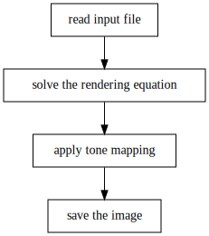

Lezione 3
Calcolo numerico per la generazione di immagini fotorealistiche
Maurizio Tomasi maurizio.tomasi@unimi.it
Immagini HDR e LDR
Da RGB a sRGB
Nella scorsa lezione abbiamo visto che l’equazione del rendering si riscrive naturalmente nelle componenti di colore R, G e B.
I dispositivi di visualizzazione (monitor, schermi di tablet, televisori) richiedono però l’uso di sRGB, che ha i seguenti limiti:
- Le componenti R, G e B sono numeri interi in un intervallo limitato;
- La risposta dei dispositivi non è lineare.
Il tone mapping è il processo attraverso cui si converte un’immagine RGB in un’immagine sRGB, dove per immagine si intende una matrice di colori RGB.
Obbiettivo del corso

Formati grafici
Nella prossima esercitazione inizieremo la nostra implementazione dal fondo, ossia il salvataggio dell’immagine.
A seconda del tipo di immagine (foto, grafico, disegno a mano libera), il formato del salvataggio cambia.
Un’immagine fotorealistica dovrebbe essere indistinguibile da quella prodotta da una fotocamera.
In che modo una fotocamera registra in un file un’immagine?
Salvataggio di immagini
Esistono due famiglie di file grafici:
- Grafica vettoriale: SVG, PDF, EPS, AI…
- Grafica raster (matriciale): JPEG, PNG, GIF, RAW…
I file vettoriali contengono istruzioni per disegnare un’immagine:
- cerchio centrato in (3.5, 2.6) con raggio 1.5 di colore nero - linea da (1.1, 1.7) a (3.7, 7.4) di colore nero con spessore 2 - etc.I file raster salvano una matrice di colori, e sono quelli che ci interessano per questo corso, perché sono i file salvati dalle fotocamere.

Grafica vettoriale

Grafica raster

Tipi di immagini raster
Ci sono due categorie di immagini raster che sono rilevanti per questo corso:
- Immagini LDR (Low-Dynamic Range)
- Codificano i colori usando il sistema sRGB: le tre componenti R, G, B sono quindi numeri interi, solitamente nell’intervallo 0–255. Tutti i formati grafici più diffusi (JPEG, PNG, GIF, etc.) appartengono a questo tipo.
- Immagini HDR (High-Dynamic Range)
- Codificano i colori usando il sistema RGB o sRGB, ma le tre componenti R, G, B sono numeri floating-point e coprono quindi un grande intervallo dinamico; per visualizzarle occorre quindi applicare il tone mapping. Esempi di questo formato sono OpenEXR e PFM.
Codifica di immagini raster
Sia le immagini LDR che HDR sono codificate tramite una matrice di colori; ogni colore è solitamente una terna (R, G, B).
Il file ha solitamente questo contenuto:
- Header
- Specifica il formato dell’immagine, le dimensioni della matrice, e a volte anche altri parametri utili (es., la data e l’ora dello scatto, le coordinate del GPS, il valore di \gamma del dispositivo che ha catturato l’immagine, etc.).
- Matrice dei colori
- L’ordine in cui sono salvate le righe/colonne, e anche l’ordine in cui sono salvate le componenti R, G, B (RGB/BGR) varia a seconda del formato.

Esempio: il formato PPM
Formato LDR, molto diffuso sui sistemi Unix.
Potete leggerlo e scriverlo usando NetPBM o ImageMagick. Il secondo è il più diffuso, e può essere installato con
$ sudo apt install imagemagickPotete convertire immagini col comando
$ convert input.png output_p6.ppm # Formato P6 $ convert input.jpg -compress none output_p3.ppm # Formato P3PPM è un formato pensato per essere scritto e letto facilmente.
File PPM (P3)
Un file PPM è un file di testo, apribile con qualsiasi editor.
Header:
- I due caratteri
P3; - Numero di colonne e di righe, in formato testo e separate da uno spazio;
- Valore massimo per ciascuna delle componenti R, G, B (solitamente 255).
- I due caratteri
Matrice dei colori: le terne R, G, B devono essere riportate come numeri interi partendo dall’angolo in alto a sinistra a quello in basso a destra, procedendo riga per riga.
Esempio (P3)
P3
3 2
255
255 0 0
0 255 0
0 0 255
255 255 0
255 255 255
0 0 0File PPM (P6)
Oltre al tipo
P3esiste anche il file di tipoP6.La differenza sta nel modo in cui le terne R, G, B sono salvate: invece di scrivere numeri in codifica testuale, vengono scritti in binario.
Vedremo dopo questa differenza, che sarà però fondamentale per l’esercitazione di questa settimana.
File PFM
È un tipo di file che si ispira a PPM, ma è un formato HDR
Molto importante per questo corso!
Non è così ben supportato: sotto Ubuntu esiste solo
pftools, che si installa con$ sudo apt install pftoolsNoi scriveremo i nostri tool che permetteranno di convertire file PFM in PPM.
Struttura di un file PFM
Come i file PPM in formato P6, anche i file PFM sono parzialmente di testo e parzialmente binari.
Header:
- I due caratteri
PF, più il carattere0x0a(ritorno a capo); ncol nrows(colonne e righe), seguito da ritorno a capo0x0a;- Il valore
-1.0, seguito da0x0a.
- I due caratteri
Matrice dei colori: le terne R, G, B devono essere scritte come sequenze di numeri a 32 bit (quindi non testo!), da sinistra a destra e dal basso all’alto (diverso da PPM!).
Codifica testuale e binaria
Codifica binaria
I file binari sono il tipo più semplice: consistono di una sequenza di byte (ossia, 8 bit scritti in sequenza).
Ogni byte può contenere un valore intero nell’intervallo 0–255
Per stampare il contenuto di un file binario potete usare il comando
xxd(sotto Ubuntu, installatelo consudo apt install xxd):$ xxd file.bin(Su altri sistemi operativi potreste avere
hexdumpanzichéxxd).Salvare dati in un file binario vuol dire scrivere una sequenza di numeri binari sul disco fisso, memorizzati come byte.
Da binario a decimale
Per ragionare sui valori dei byte si usa la numerazione binaria, che ovviamente usa come base il numero 2:
0 → 0 1 → 1 2 → 10 3 → 11 4 → 100 …Per un numero
dcbaespresso in una base B, il suo valore è\text{value} = a \times B^0 + b \times B^1 + c \times B^2 + d \times B^3.
Quindi il valore binario
101corrisponde a 1 \times 2^0 + 0 \times 2^1 + 1\times 2^2 = 5.
Notazione ottale
La notazione binaria è comoda per una CPU ma scomoda per noi!
Una base più comoda è quella ottale (8).
In C/C++, le cifre ottali si scrivono facendole precedere da
0.Siccome 8 = 2^3, una cifra ottale corrisponde a 3 cifre binarie. Basta imparare a memoria l’associazione binario-ottale per i numeri da 0 a 7 per saper convertire ogni altro valore:
03 -> 011 06 -> 110 036 -> 011 110La conversione inversa è ugualmente semplice.
Notazione esadecimale
La notazione ottale è però scomoda, perché i computer lavorano a multipli di 8 bit (i byte), mentre la notazione ottale usa 3 bit per cifra.
Oggi la notazione ottale è quasi completamente abbandonata in favore della notazione esadecimale (16), che usa le cifre
0 1 2 3 4 5 6 7 8 9 A B C D E FLa notazione esadecimale richiede 4 bit per cifra, perché 2^4 = 16. Siccome un byte è composto da 8 bit, il valore di un byte è sempre codificabile usando solo due cifre esadecimali (
0xFF = 255).In C/C++/Julia/C#, i numeri esadecimali si scrivono facendoli iniziare con
0x, ad es.0x1F67 = 8039.
Ordine dei bit in un byte
C’è sempre un’ambiguità di fondo nel raggruppamento dei bit in byte, e sta nel loro ordine.
Se un byte è formato dalla sequenza di bit
0011 0101, esistono due modi per interpretarlo:\begin{aligned} 2^2 + 2^3 + 2^5 + 2^7 &= 172,\\ 2^5 + 2^4 + 2^2 + 2^0 &= 53. \end{aligned}
«Endianness» dei bit
L’ordine dei bit in un byte è detto in gergo bit-endianness, termine tratto dai Viaggi di Gulliver (1726), di J. Swift:
- La codifica big-endian parte dalla potenza maggiore («big»);
- La codifica little-endian parte dalla potenza minore («little»).
Le CPU Intel e AMD oggi usate nei personal computer usano tutte la codifica little-endian. La codifica big-endian è stata molto usata in passato, ma oggi è ancora impiegata in alcune CPU ARM.
Salvare dati in binario
Salvare una variabile in forma binaria non è in generale semplice!
In C++ ad esempio, il programma seguente non salva il valore di
xin binario:Il valore
138è stato salvato in forma testuale. (Se includete<cstdint>e cambiate il tipo dixdaintauint8_t, il valore viene salvato come binario!)Vediamo in cosa consiste la codifica testuale.
Codifica testuale
I caratteri del computer vengono codificati tramite dei valori precisi; le lettere dell’alfabeto latino, le cifre romane e la punteggiatura di base usano la codifica ASCII:
- La lettera
Aè codificata dal numero 65,Bda 66,Cda 67, etc.; - La lettera
aè codificata dal numero 97,bda 98, etc.; - La cifra
0è codificata dal numero 48,1da 49, etc.
- La lettera
Codificare una parola come
Casavuol dire rappresentare la parola con la sequenza di valori67 97 115 97.Questi codici numerici fanno parte dello standard ASCII, che specifica 128 caratteri. (Qui c’è la tabella completa, spiegata bene).
Codifica di testi
Lo standard ASCII è semplicissimo, eppure sufficiente per codificare testi:
Beauty - be not caused - It Is - Chase it, and it ceases - Chase it not, and it abides - Overtake the Creases In the Meadow - when the Wind Runs his fingers thro’ it - Deity will see to it That You never do it - (Emily Dickinson)Ma come si codifica la fine della riga in ogni verso della poesia?
In 128 valori è possibile codificare tutti i caratteri?
Ritorno a capo
Il modo per indicare un ritorno a capo dipende dal sistema operativo!
Nelle macchine da scrivere c’erano due operazioni da fare per iniziare una nuova riga (vedi questo video YouTube):
- Spostarsi verso il bordo sinistro/destro del foglio (carriage return);
- Muoversi alla riga successiva (line feed).
Anche i computer hanno adottato questi due comandi, che corrispondono a due valori ASCII:
13(carriage return, indicato anche come\r) e10(line feed, indicato con\n).
Tipi di ritorno a capo
Il tipo di ritorno a capo dipende dal sistema operativo utilizzato:
Sistema operativo Codifica Windows, DOS 13 10(\r\n)RISC OS 10 13(\n\r)C64, macOS classic 13(\r)Linux, Mac OS X 10(\n)Si può convertire un file con i comandi
dos2unixeunix2dos.Git si aspetta il formato Linux (
\n), ed emette un warning se i file aggiunti congit addne usano un altro.
Da ASCII a Unicode
ASCII è stato usato per la prima volta su un terminale che usava 7 bit per byte: ecco perché l’ultimo carattere ha valore
127 = 0x7F(127 = 2^7 - 1).Nei 128 caratteri sono inclusi anche caratteri «speciali», come il ritorno a capo (
10), la tabulazione (8), etc., che «consumano» posizioni nella tabella.ASCII è un sistema centrato sul sistema di scrittura usato negli USA, e non include caratteri accentati come «è», «é», «ü», «â», etc.
Oltre agli accenti sulle lettere latine, sono esistenti nel mondo molti altri alfabeti e simboli (greco, cirillico, cinese, i simboli matematici, etc.).
Lo standard Unicode ha esteso ASCII per includere tutte i possibili simboli testuali (contiene anche i geroglifici egizi e il sumerico!).
Lo standard Unicode
Standard internazionale nato nel 1991, che copre praticamente tutti i sistemi di scrittura oggi esistenti al mondo.
Oggi è supportato quasi universalmente.
Viene aggiornato periodicamente, circa una volta all’anno.

Versioni Unicode
| Versione | Data | Scritture | Caratteri |
|---|---|---|---|
| 1.0 | Ottobre 1991 | 24 | 7,129 |
| … | |||
| 11.0 | Giugno 2018 | 146 | 137,374 |
| 12.0 | Marzo 2019 | 150 | 137,928 |
| 13.0 | Marzo 2020 | 154 | 143,859 |
Esempi di caratteri Unicode
- Lettera A maiuscola:
A(65, uguale all’ASCII!); - Lettera A minuscola con accento acuto:
à(224); - Lettera E maiuscola con accento grave:
É(201); - Puntini di sospensione:
…(8230); - Bemolle:
♭(9837); - Faccina che ride:
😀(128.512).
Codifica Unicode
Ogni carattere Unicode è associato a un valore numerico, chiamato code point.
Si possono combinare insieme caratteri: unendo
ae^per formareâ.Le lettere accentate più comuni hanno però una codifica dedicata. Queste lettere sono quindi codificabili in più modi secondo lo standard Unicode. (Questo rende complicato confrontare due stringhe!)
Un grafema è il risultato di una combinazione di uno o più code point. Quindi la parola
cosìè composta da quattro grafemi:c,o,sedì(che può essere il code point 236, oppure la combinazione dei code pointie `).La combinazione di caratteri diversi è molto importante in certe scritture come il cinese.
Codificare i code point
Lo standard Unicode possiede molti code point, e a ogni versione se ne aggiungono di nuovi.
Questo pone un problema nella codifica dei code point su file: ASCII usava un byte per carattere perché il set era limitato. Ma per Unicode quanti byte per code point usare? 1? 2? 100?
- Se si scegliesse un valore basso, si limiterebbe l’estendibilità di Unicode.
- Se si scegliesse un valore molto alto, i file di testo aumenterebbero di dimensione inutilmente: la poesia di E. Dickinson richiede 232 byte in codifica ASCII (un byte per carattere). Usare 4 byte per carattere quadruplicherebbe lo spazio.
Codifiche oggi usate
Storicamente sono state proposte varie codifiche per Unicode.
Le più usate oggi sono le codifiche UTF (Unicode Transformation Format), che esistono in tre versioni:
- UTF8 (usata nei sistemi Linux e Mac OS X);
- UTF16 (usata in Windows);
- UTF32 (molto comoda dal punto di vista del software).
UTF-8
È oggi la codifica più usata in assoluto (tranne che sotto Windows 😢).
Il numero di byte usati per un code point è variabile da 1 a 4.
È compatibile con la codifica ASCII: un file ASCII è automaticamente anche un file UTF-8 valido, perché sfrutta il fatto che la codifica ASCII usa solo 7 degli 8 bit in un byte, e che i primi 127 code point Unicode sono uguali ai valori ASCII.
Codifica UTF-8
| Code point | Byte 1 | Byte 2 | Byte 3 | Byte 4 |
|---|---|---|---|---|
0x0000–0x007F |
0xxxxxxx |
— | — | — |
0x0080–0x07FF |
110xxxxx |
10xxxxxx |
— | — |
0x0800–0xFFFF |
1110xxxx |
10xxxxxx |
10xxxxxx |
— |
0x10000–0x10FFFF |
11110xxx |
10xxxxxx |
10xxxxxx |
10xxxxxx |
Codifica UTF-16
Funziona come la codifica UTF-8, ma si usano coppie di byte (8 + 8 = 16).
Un code point può essere codificato da due oppure quattro byte.
C’è anche qui un problema di endianness: il valore
0x2A6Csi scrive come la coppia di byte0x2A 0x6C(big endian) oppure0x6C 0x2A(little endian)?Nei file di testo codificati con UTF-16 si inserisce all’inizio del file il cosiddetto BOM (byte-order marker) che corrisponde al code point
0xFEFF. Se i primi due byte di un file sono0xFE 0xFF, allora è chiaro che il file usa big endian, se sono0xFF 0xFEusa little endian. (Anche UTF-8 ha un BOM,0xEF 0xBB 0xBF, che però non è così utile).UTF-16 è usato da Windows e nei linguaggi basati su Java (Kotlin, Scala, etc.).
Codifica UTF-32
Ovviamente, usa 32 bit per code point.
In questo caso non c’è ambiguità: ogni code point usa esattamente quattro byte.
È ovviamente la codifica più inefficiente dal punto di vista dello spazio occupato: la poesia di Emily Dickinson occuperebbe 928 byte in UTF-32, e solo 232 byte in ASCII/UTF-8 (quattro volte tanto!)
È però la codifica più semplice: ogni code point occupa sempre lo spazio di un tipo
uint32_tin C/C++.
File binari e testuali
Quanto detto oggi spiega perché è spesso più vantaggioso usare file binari anziché testuali: è molto più facile per un programma leggerli e scriverli!
Quasi tutti i formati grafici oggi usati (PNG, JPEG, GIF, etc.) si basano su codifiche binarie.
I file testuali hanno però alcuni vantaggi significativi:
Sono più facili da leggere e da scrivere per un essere umano;
Non hanno problemi di endianness.
Questa settimana e la prossima lavoreremo su file binari; tra alcune settimane passeremo ai file testuali per leggere i file di input del nostro programma.